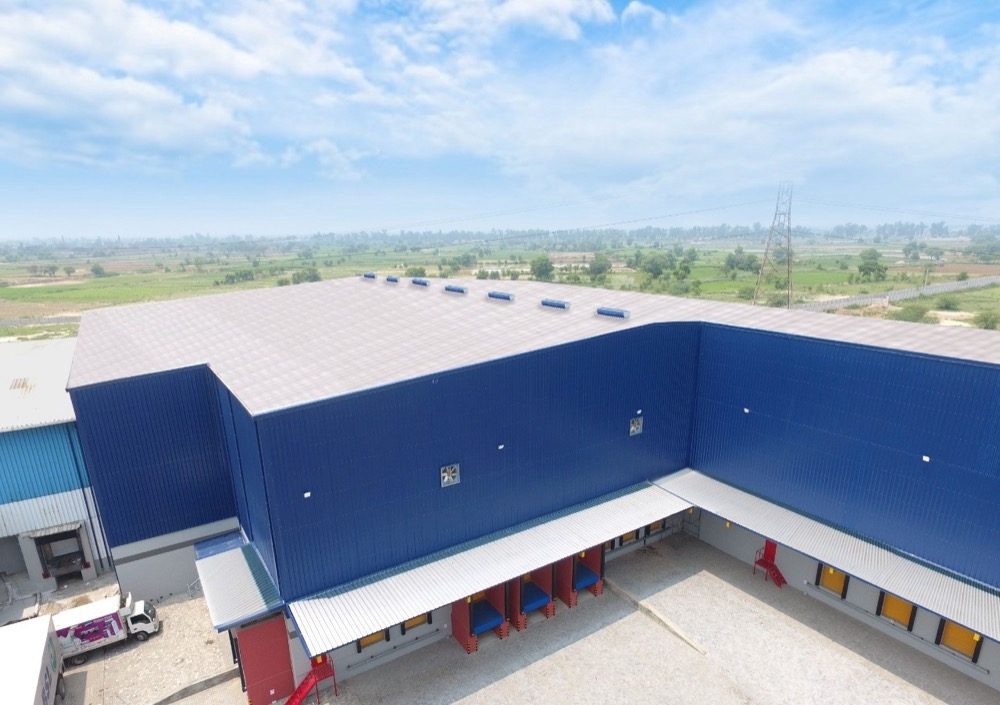

Cold storage Karachi — engineered for port-city cold chain, coastal humidity, and 42°C ambient.
Karachi is where Pakistan's cold chain begins. Pharmaceutical imports, fresh fruit, frozen protein, and temperature-sensitive FMCG all clear Karachi Port before reaching the rest of the country. Izhar Foster has built cold storage for Karachi's 3PL operators, pharmaceutical importers, banana ripeners, and food-and-beverage processors — engineering for the coastal humidity, intense dock cycling, and K-Electric tariff that make Karachi cold storage a different discipline from any inland Pakistani city. 2,100+ installations across Pakistan. Connect Logistics, USAID, and more delivered in Karachi and Sindh.
Three engineering realities that separate Karachi from every other Pakistani city.
Karachi's relative humidity averages 60–80% year-round, peaking past 90% during monsoon. In cold storage terms, this means latent load — the energy required to remove moisture from infiltrating air — is substantially higher than at any inland Pakistani city. Every dock opening, every staff entry, every defrost cycle introduces humid coastal air. Izhar Foster applies a higher latent fraction in ASHRAE Ch. 24 heat-load calculations for Karachi, biases evaporator selection toward higher airflow per kW to manage coil frosting, and schedules defrost cycles for moisture input rather than just temperature. Undersizing for latent load in Karachi results in progressive ice build-up and product temperature drift — the most common failure mode in Karachi cold stores sized using inland-city design assumptions.
Karachi cold stores serving the import cold chain see dock cycling intensity that no inland distribution centre matches. Product arrives from port by refrigerated vehicle, stages through the cold store, and is distributed by further refrigerated transport. The dock — the thermal weak point of every cold store — cycles dozens of times per day rather than the 4–8 times typical of inland food processing cold storage. Izhar Foster specifies fast-closing dock doors (Hörmann high-speed), dock seals and shelters, and air curtains or vestibule airlocks for Karachi 3PL and port-receiving cold stores as standard scope — not optional upgrades.
A significant portion of Pakistan's pharmaceutical imports clear Karachi Port. Temperature-sensitive medicines — vaccines, biologics, insulin — must maintain WHO TRS 961 Annex 9 cold chain conditions from the moment they leave the ship's refrigerated hold. Karachi pharmaceutical cold rooms must therefore handle receiving conditions: a room that can accept inbound product at a range of temperatures and restore it to specification within a validated timeframe, while maintaining IQ/OQ/PQ documentation and DRAP-compliant temperature records. This is more demanding than a domestic pharma manufacturing cold room.
Connect Logistics — multi-temperature 3PL cold chain warehouse.

Connect Logistics — multi-temperature cold storage warehouse
Multi-temperature 3PL cold-chain facility with frozen warehouse (−25°C), chilled cold storage (+2/+4°C), and ambient-controlled distribution (+15/+25°C zones) under one roof. Multiple loading docks with dock seals. Ammonia-glycol secondary-loop refrigeration plant — the correct system choice for a large Karachi facility running at high ambient with intense dock cycling. FireSafe PIR envelope with coastal humidity design. Full ASHRAE Ch. 24 heat-load, condenser derate at 42°C Karachi design DB. Connect Logistics serves Karachi's food-and-beverage distribution market across multiple major FMCG brand principals.
Full case study with photos →Cold storage for every Karachi cold-chain need.
Karachi's economy spans port logistics, pharmaceutical importing, fresh-fruit distribution, food processing, and one of Pakistan's densest FMCG supply chains. Each creates a distinct cold storage engineering brief.
Multi-temperature cold chain warehouses for Karachi's 3PL operators — frozen, chilled, and ambient zones under one roof, with dock engineering rated for Karachi's port-supply intensity. Connect Logistics delivered.
DRAP-compliant +2/+8°C cold rooms for vaccines and biologics. WHO TRS 961 Annex 9 receiving cold rooms for pharmaceutical importers. N+1 Bitzer redundancy, IQ/OQ/PQ documentation, validated temperature mapping — calibrated for Karachi's coastal environment.
Ethylene-controlled banana ripening rooms for Karachi importers and distributors. Pressure-tight PIR construction, stepped 14–17°C temperature cycling over 4–6 days, 100–150 ppm ethylene initiation. Green bananas arrive at Karachi Port — ripening rooms bridge the gap to retail-ready Stage 4.
Cold rooms and blast freezers for Karachi's food processors — seafood blast-freezing, dairy chilled storage, poultry processing cold chain. HACCP-compliant construction with stainless finishes, coving, sloped drainage floors.
Karachi is Pakistan's seafood export gateway. Blast freezers at −35 to −40°C air temperature for rapid IQF freezing. Export-grade frozen storage at −25°C. Ice plant integration. HACCP and EU export documentation scope available on request.
PIR-insulated truck bodies with Zanotti Italy and Thermo King USA refrigeration units for Karachi's cold-chain distribution fleet. Coastal humidity accelerates vehicle insulation degradation — PIR's closed-cell structure resists moisture ingress far better than EPS or PUR alternatives.
The technical decisions that Karachi's coastal climate forces.
Latent load — the number most Karachi cold stores get wrong
A standard ASHRAE Ch. 24 cold store heat-load calculation has five components: transmission (through walls, roof, floor), infiltration (through door openings), product load (the heat brought in with product), internal loads (lights, people, forklifts), and equipment loads. In an inland city like Lahore or Multan, infiltration is predominantly sensible — the air is warm and dry. In Karachi, infiltration air is warm and wet. The latent component — the energy required to condense moisture out of the infiltrating air — is 30–60% higher than an inland calculation would assume at equivalent air-change rates.
The result of under-accounting for latent load is progressive evaporator coil icing, more frequent defrost cycles, shorter defrost intervals, higher energy use, and eventual temperature drift. We have assessed Karachi cold stores built to inland-city assumptions and found coil ice build-up that reduced cooling capacity by 20–35% within three months of commissioning. Izhar Foster applies Karachi-specific latent fraction factors to all Karachi heat-load calculations as standard procedure.
Refrigerant and system selection for Karachi
At 38–42°C ambient, HFC refrigerant systems in large Karachi cold stores face elevated condensing pressures and reduced coefficient of performance. For facilities above 500 kW refrigeration load, Izhar Foster recommends ammonia-glycol secondary-loop systems — ammonia (R-717) has the highest refrigeration efficiency of any common refrigerant at elevated ambient temperatures, generates no greenhouse gas impact on leak, and avoids the large HFC charge that triggers insurance and regulatory concerns in dense Karachi industrial areas. The Connect Logistics facility uses ammonia-glycol for exactly this reason.
For smaller Karachi installations (below 200 kW), Bitzer CDU packs with HFC R-449A (a lower-GWP HFC blend that performs well at elevated condensing) are specified. R-404A is no longer specified for new Karachi builds — its condensing pressure at 42°C ambient pushes system high-side pressure into the upper operating range and its GWP is 3,922 (EU F-Gas phase-down already complete, Pakistan regulatory direction is the same).
Panel specification for coastal Karachi
Coastal humidity attacks panel joints, fasteners, and facing adhesion over time. Izhar Foster's FireSafe PIR panels use closed-cell foam that does not absorb moisture — the foam itself is dimensionally stable and thermally consistent even in Karachi's humidity. Joint sealing with food-grade sealant at every panel connection is standard on Karachi projects (not an upgrade). Stainless-steel fasteners are specified for all external fixings. At panel thicknesses of 100 mm+ (standard for Karachi freezer rooms at the 42°C design ambient), thermal bridging at fixings is accounted for in the overall U-value calculation.
K-Electric tariff and energy cost
K-Electric's commercial tariff (approximately PKR 45–50/kWh for industrial cold storage consumers in 2026) is higher than LESCO's Lahore commercial rate and most other DISCO tariffs. This has two implications for Karachi cold storage design. First, panel insulation thickness payback is shorter — the additional capital cost of 125 mm versus 100 mm PIR (approximately PKR 350–450/m² more) pays back in 2–3 years of energy savings at K-Electric's tariff. Second, solar PV integration for Karachi cold stores has among the highest ROI of any Pakistani city — Karachi receives approximately 1,750–1,800 kWh/kWp annual solar yield (versus 1,600–1,650 in Lahore), combined with a higher grid tariff to displace. Our cost calculator models solar PV integration for Karachi projects in its detailed mode.
Get an indicative cost for your Karachi cold store in 30 seconds.
The cost calculator is pre-set for Karachi — K-Electric tariff, 42°C ambient, coastal load-shedding hours, port-city commodity presets. Select your commodity and capacity. Get a PKR cost band with engineering, civil, refrigeration, and operating cost breakdown. Rough estimate ±20% — engineer validation required before quoting.
Estimate Karachi cold store cost →Everything your Karachi cold store needs.
Walk-in chillers, blast freezers, multi-temperature 3PL warehouses
Pharma Cold Storage →DRAP · WHO TRS 961 · IQ/OQ/PQ · port-receiving cold rooms
Banana Ripening Rooms →Ethylene-controlled chambers for Karachi's banana import operations
Refrigeration Systems →NH₃-glycol for large Karachi facilities · Bitzer CDU for smaller
Refrigerated Vehicles →PIR truck bodies resist coastal moisture · Zanotti & Thermo King
Cold Storage Lahore →Manufactured in Lahore — same-day delivery, LESCO engineering